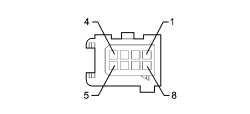

2127OR CHECK ON OPERATION OF UP-DOWN BUTTONS ON THE STEERING WHEEL
- Path
- Test > 21 GEARBOX UNIT > 2127 ELECTRO-HYDRAULIC SELECTION GEARBOX EXTERNAL CONTROLS > 2127O ELECTROHYDRAULIC SELECTION GEARBOX EXTERNAL CONTROLS TESTS > 2127OR CHECK ON OPERATION OF UP-DOWN BUTTONS ON THE STEERING WHEEL
- Kind
- test / check procedure
- Applies to
- engines: 2.2 JTS; all production periods; only with equipment: Smart gearbox
- Interactive page
- https://sloeber94.github.io/elrnDB-aBrrSpdr/en/#/946004576
Applies to: engines: 2.2 JTS; all production periods
STEP | CHECK TO BE PERFORMED | REMEDIAL ACTION IF THE CHECK IS NOT OK |
|---|---|---|
1 | Check on UP button Disconnect the connector for the wiring coming from the buttons from the clock spring Connect the ohmmeter between pins 3 and 4 Press the UP button and Check that the resistance value is 330 Ohm ± 10% Press the DOWN button and Check that the resistance value is 1015 Ohm ± 10% | Replace the UP button Op. 2127A30 Replace the DOWN button Op. 2127A30 |

Up/Down buttons connector